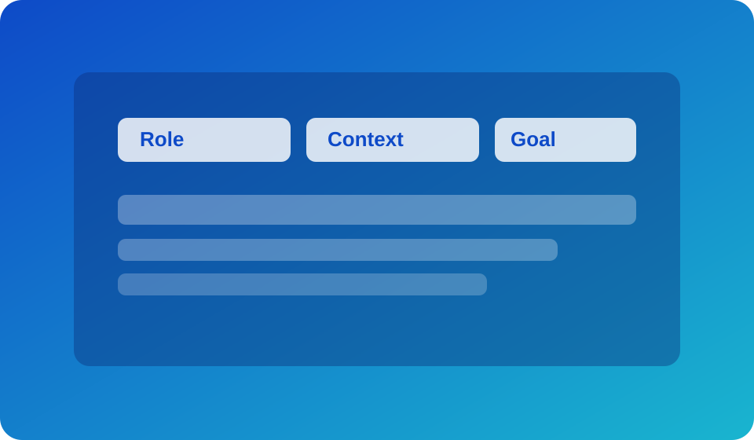
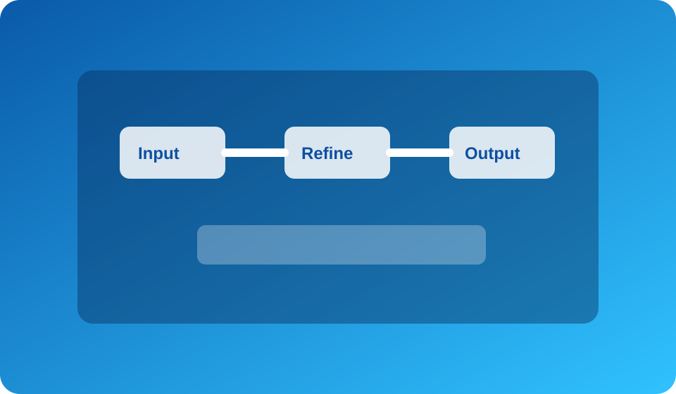

Prompt Framework Design
Learn how role, context, and goal structure produces sharper and more reliable ChatGPT outputs.
Live Webinar Class
Start from zero and build a practical prompt workflow for email, planning, writing, and research.

Learn how role, context, and goal structure produces sharper and more reliable ChatGPT outputs.

Map your input-to-output process so ChatGPT becomes a repeatable execution engine for daily tasks.
This class is ideal for freelancers, business owners, marketers, students, and professionals who want to save time while improving output quality. By the end, you will have your own personalized ChatGPT prompt system that you can use every day for communication, planning, and execution.